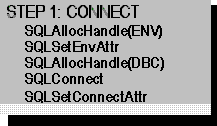

The first step in any application is to connect to the data source. This phase, including the functions it requires, is illustrated in the following figure.

The first step in connecting to the data source is to load the Driver Manager and allocate the environment handle with SQLAllocHandle. For more information, see “Allocating the Environment Handle” in Chapter 6, “Connecting to a Data Source or Driver.”
The application then registers the version of ODBC to which it conforms by calling SQLSetEnvAttr with the SQL_ATTR_APP_ODBC_VER environment attribute. For more information, see the “Declaring the Application’s ODBC Version” section in Chapter 6, “Connecting to a Data Source or Driver,” and the “Backward Compatibility and Standards Compliance” section in Chapter 17, “Programming Considerations.”
Next, the application allocates a connection handle with SQLAllocHandle and connects to the data source with SQLConnect, SQLDriverConnect, or SQLBrowseConnect. For more information, see “Allocating a Connection Handle” and “Establishing a Connection” in Chapter 6, “Connecting to a Data Source or Driver.”
The application then sets any connection attributes, such as whether to manually commit transactions. For more information, see “Connection Attributes” in Chapter 6, “Connecting to a Data Source or Driver.”